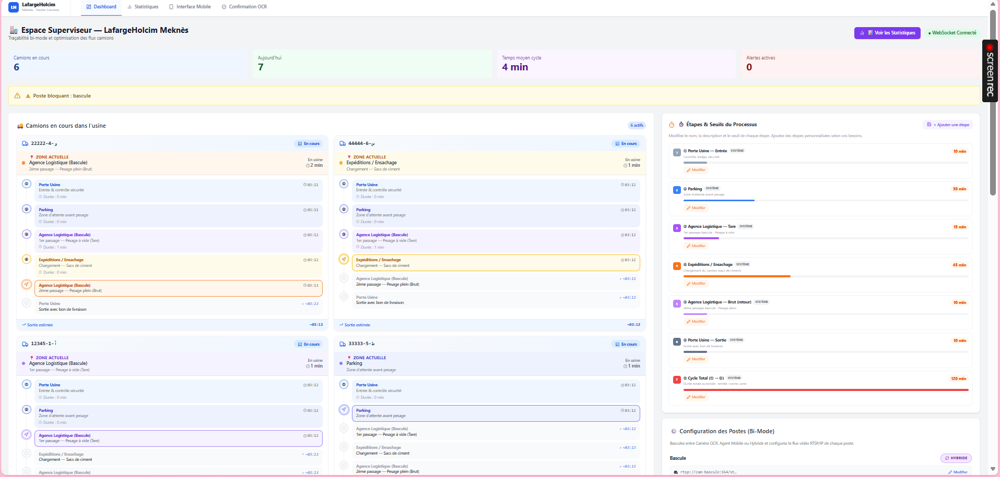
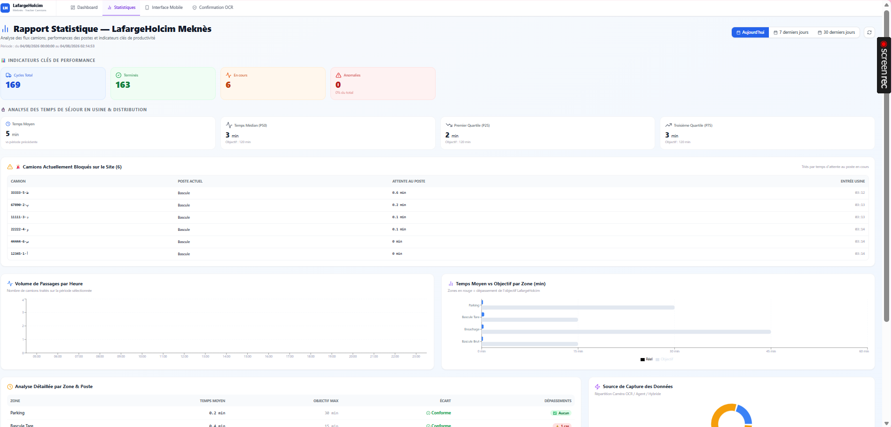

Conception et Developpement d'une Plateforme Intelligente de Tracabilite et d'Optimisation des Flux Camions en Environnement Industriel
Cas d'application : Smart-Truck-Tracker — Holcim Meknes
Presente par : Samya LOUKILI Filiere : Intelligence Artificielle et Sciences de Donnees pour les Systemes Industriels (IAD-SI) Niveau : 1ere annee du Cycle Ingenieur — 3eme annee ENSAM Meknes Ecole : ENSAM Meknes — Universite Moulay Ismail Organisme d'accueil : Holcim Maroc — Usine de Meknes (Ouisslane) Encadrant professionnel : M. Saad FETOUH Encadrant academique : M. Noureddine ALLASSAK Periode de stage : Juillet — Aout 2026
Soutenance de Stage
Sujet : Conception et Developpement d'une Plateforme Intelligente de Tracabilite et d'Optimisation des Flux Camions — Smart-Truck-Tracker
Etudiante : Samya LOUKILI
Filiere : Intelligence Artificielle et Sciences de Donnees — Systemes Industriels (IAD-SI)
Niveau : 1ere annee du Cycle Ingenieur (3eme annee ENSAM Meknes)
Organisme d'accueil : Holcim Maroc, Usine de Meknes
Membres du Jury :
M. Noureddine ALLASSAK — Encadrant Academique (ENSAM Meknes)
M. Saad FETOUH — Encadrant Professionnel (Holcim Meknes)
Soutenu publiquement le _______________ 2026
Dedicace
A mes parents, pour leur amour inconditionnel et leur soutien sans faille tout au long de mon parcours.
A mes freres et soeurs, pour leur patience et leurs encouragements.
A tous ceux qui croient en le pouvoir de l'innovation pour transformer l'industrie.
Table des Matieres
Liste des Abreviations
Remerciements
Resume
Introduction Generale
Chapitre 1 — Contexte Historique et Presentation de l'Organisme
1.1 Le groupe mondial Holcim
1.2 L'implantation industrielle au Maroc
1.3 Le procede de fabrication et logistique camions
1.4 La problematique : limites de la tracabilite classique
1.5 Le Service Informatique : cadre d'accueil
Chapitre 2 — Etat de l'Art, Theorie et Choix Technologiques
2.1 La logistique industrielle 4.0
2.2 Vision par ordinateur et OCR
2.3 Architectures temps reel et WebSocket
2.4 Machine Learning pour la prediction temporelle
2.5 Deploiement conteneurise et Edge Computing
Chapitre 3 — Methodologie, Modelisation et Architecture
3.1 Analyse des besoins et specifications
3.2 Diagramme de cas d'utilisation
3.3 Architecture logicielle modulaire
3.4 Diagramme de classes
3.5 Modelisation des donnees et cycle de vie camion
3.6 Diagramme de sequence
3.7 Diagramme de deploiement
3.8 Le pipeline ML Zero-to-Hero
Chapitre 4 — Implementation, Deploiement et Resultats
4.1 Systeme de capture bi-mode
4.2 Dashboard superviseur et interface mobile
4.3 Statistiques et analytiques
4.4 Suite de tests automatises et assurance qualite (QA)
4.5 Analyse critique des performances et limites
Chapitre 5 — Guide d'Installation et d'Utilisation
Conclusion Generale et Perspectives
Annexes
Liste des Abreviations
Abreviation
Signification complete
IA
Intelligence Artificielle
ML
Machine Learning
DL
Deep Learning
OCR
Optical Character Recognition
ALPR
Automatic License Plate Recognition
CNN
Convolutional Neural Network
YOLO
You Only Look Once
API
Application Programming Interface
REST
Representational State Transfer
WS
WebSocket
ORM
Object-Relational Mapping
PG / PostgreSQL
PostgreSQL (base de donnees relationnelle)
Redis
REmote DIctionary Server
EWMA
Exponentially Weighted Moving Average
MAPE
Mean Absolute Percentage Error
ETA
Estimated Time of Arrival
PWA
Progressive Web App
Docker
Plateforme de conteneurisation
RTSP
Real Time Streaming Protocol
JSON
JavaScript Object Notation
CSV
Comma-Separated Values
HSE
Health, Safety and Environment
KPI
Key Performance Indicator
GPU / CPU
Graphics / Central Processing Unit
PoC
Proof of Concept
CI/CD
Continuous Integration / Continuous Deployment
SQL
Structured Query Language
JWT
JSON Web Token
CORS
Cross-Origin Resource Sharing
Nginx
Serveur web / reverse proxy
Remerciements
Je tiens a exprimer ma sincere gratitude a l'ensemble du personnel de l'usine Holcim de Meknes pour l'accueil chaleureux reserve tout au long de ce stage de fin d'annee. Cette experience m'a permis de decouvrir, de l'interieur, la realite operationnelle d'un site industriel de premier plan et de mesurer concretement l'importance de la digitalisation dans la chaine logistique d'une cimenterie moderne.
Mes remerciements s'adressent en particulier a mon encadrant academique principal, Monsieur Noureddine ALLASSAK, pour son suivi methodologique rigoureux, ses conseils avisés et son accompagnement tout au long de ce parcours. Je remercie egalement Monsieur Saad FETOUH pour son soutien operationnel et ses retours techniques durant les phases de test et de déploiement.
Je remercie egalement l'ensemble du corps professoral de la filiere Intelligence Artificielle et Sciences de Donnees pour les Systemes Industriels de l'ENSAM, pour la qualite de la formation theorique et pratique m'ayant permis d'aborder ce stage avec les outils conceptuels et techniques necessaires a sa reussite.
Enfin, je remercie les equipes du departement Logistique et du departement Securite de l'usine Holcim Meknes pour leur patience dans l'explication des processus metier et leur contribution essentielle a la definition des besoins operationnels du projet Smart-Truck-Tracker.
Resume
Contexte et Objectifs
Ce rapport presente le travail realise dans le cadre d'un stage de fin d'annee du cycle d'ingenieur, effectue au sein de l'usine de production de ciment Holcim de Meknes. Ce stage a porte sur la conception, le developpement et la validation d'une plateforme intelligente de tracabilite et d'optimisation des flux camions, denommee Smart-Truck-Tracker, dont l'objectif est de fournir une visibilite temps reel sur le parcours de chaque camion dans l'usine, de detecter automatiquement les goulots d'etranglement, et de predire les temps de cycle par intelligence artificielle.
Le systeme repose sur une architecture logicielle moderne et modulaire, combinant un backend FastAPI haute performance, une base de donnees PostgreSQL relationnelle, et un mecanisme de WebSocket en memoire pour la diffusion temps reel. Le frontend React est responsive et deploye sous forme de Progressive Web App (PWA). Le coeur analytique integre un pipeline de Machine Learning evolutif (Prophet + XGBoost) s'adaptant automatiquement au volume de donnees accumule.
La capture des evenements s'effectue selon un paradigme bi-mode innovant : une camera OCR alimentee par YOLOv8 lit automatiquement les plaques d'immatriculation, tandis qu'un agent de terrain peut valider ou saisir manuellement les donnees via une interface mobile optimisee. Cette redondance garantit la fiabilite du systeme meme dans des conditions industrielles difficiles (poussiere, eclairage variable).
Les resultats obtenus demontrent la faisabilite technique et la valeur metier de l'approche, avec une visibilite temps reel sur les cycles camions, une detection instantanee des depassements de seuil, et des predictions de temps de sejour permettant une anticipation proactive des retards.
L'industrie manufacturiere traverse, depuis le debut des annees 2020, une mutation profonde communement designee sous le terme d'Industrie 4.0, caracterisee par la convergence des technologies numeriques — capteurs connectes, intelligence artificielle, analyse de donnees massives — avec les processus de production traditionnels. Parmi les secteurs les plus concernes figure l'industrie cimentiere, dont les procedes impliquent des temperatures extremes, des equipements mecaniques puissants et des flux logistiques permanents.
C'est dans ce contexte que s'inscrit ce rapport, redige a l'issue d'un stage de fin d'annee effectue au sein de la filiere « Intelligence Artificielle et Sciences de Donnees pour les Systemes Industriels » de l'ENSAM, realise a la cimenterie Holcim de Meknes.
La logistique des flux camions constitue un enjeu strategique majeur pour toute cimenterie. Chaque jour, des dizaines de camions entrent et sortent du site, traversant un cycle de six etapes critiques : porte d'entree, parking, bascule (tare), ensachage/chargement, bascule (brut), et porte de sortie. Sans systeme de suivi automatise, le superviseur logistique n'a aucune visibilite en temps reel sur l'etat du parc camions, les temps d'attente par zone, ni les transporteurs responsables des retards recurrents.
La problematique centrale ayant guide ma mission de stage peut etre formulee ainsi : comment concevoir un systeme de tracabilite automatise, fonde sur l'intelligence artificielle et les architectures temps reel, capable de suivre chaque camion a chaque etape de son parcours, de detecter instantanement les goulots d'etranglement, et de predire les temps de cycle pour une optimisation proactive des ressources logistiques ? Cette problematique a donne naissance au projet « Smart-Truck-Tracker ».
Ce rapport s'articule en cinq chapitres : le cadre organisationnel du stage, l'etat de l'art theorique des technologies mobilisees, la methodologie et l'architecture du systeme, l'implementation et les resultats, puis le guide d'installation et d'utilisation, avant un bilan et des perspectives de deploiement a l'echelle de l'usine.
Chapitre 1 — Contexte Historique et Presentation de l'Organisme
1.1 Le groupe mondial Holcim
Le groupe Holcim trouve ses origines en 1912, en Suisse, a Holderbank, avec la fondation de la « Financiere Glaris ». L'entreprise adopte ensuite le nom de Holderbank, puis Holcim. En 2015, Holcim fusionne avec le groupe francais Lafarge — fonde en 1833 — pour donner naissance a LafargeHolcim, alors numero un mondial du ciment, present sur plus de 2800 sites dans une quarantaine de pays. En mai 2021, le groupe simplifie son identite en adoptant le nom unique « Holcim ». Par decision du 22 mai 2026, la filiale marocaine « LafargeHolcim Maroc » a officiellement adopte la denomination « Holcim Maroc ».
Aujourd'hui, le groupe Holcim, dont le siege se situe a Zoug (Suisse), figure parmi les tout premiers acteurs mondiaux des materiaux de construction, structurant son offre autour du ciment, du beton pret a l'emploi, des granulats et des solutions de construction durable, avec un objectif de neutralite carbone a l'horizon 2050. Le chiffre d'affaires consolidé du groupe avoisine les 25 milliards de dollars, employant plus de 70 000 collaborateurs a travers le monde.
Figure 1.1 — Identite visuelle du groupe Holcim (2021)
1.2 L'implantation industrielle au Maroc et l'usine de Meknes
Des 1928, l'implantation de plusieurs cimenteries marque la modernisation du secteur cimentier marocain, dont celle de Meknes, mise en service par Lafarge a travers la societe des Ciments Artificiels de Meknes (CADEM). La fusion mondiale de 2015 trouve son pendant national en 2016 avec la naissance de LafargeHolcim Maroc, devenue Holcim Maroc en 2026. L'entite marocaine se positionne comme leader national des materiaux de construction, avec une capacite de production annuelle superieure a 8 millions de tonnes.
L'usine de Meknes, implantee a Ouisslane sur une superficie de plus de 200 hectares, compte parmi les sites les plus anciens et les plus performants du groupe au Maroc. Elle dispose d'une ligne de production moderne avec un four rotatif de 4500 tonnes/jour, d'un atelier de broyage clinker, et d'une unité d'ensachage automatisee. C'est au sein de cette usine, au contact des equipes de logistique et de digitalisation, que s'est deroule mon stage, sous la supervision du Service Informatique.
Figure 1.2 — Vue panoramique de l'usine Holcim de Meknes (Ouisslane)
1.3 Le procede de fabrication du ciment et logistique camions
La fabrication du ciment Portland est un procede continu, energivore, et impliquant des etapes mecaniques et thermiques de grande intensite. La matiere premiere, le calcaire associe a de l'argile, est extraite en carriere, generalement a proximite immediate de l'usine. Les blocs extraits sont ensuite reduits par concassage, stockes en tas de pre-homogeneisation puis broyes finement pour obtenir une farine crue homogene. La farine crue est ensuite portee a une temperature avoisinant 1450°C dans un four rotatif. Le clinker obtenu est enfin broye et conditionne avant expedition.
Etape du procede
Risques / Contraintes logistiques
Dispositif de maitrise actuel
Extraction (carriere)
Coactivite engins/pietons, projections
Plans de circulation, EPI, formation
Concassage
Happement, ecrasement, bruit, vibrations
Consignation LOTO, protections auditives
Broyage cru
Organes en rotation, poussieres
Balisage, EPI respiratoires, capotages
Cuisson (four)
Brulures, temperatures extremes, gaz
Zones interdites balisees, controle d'acces
Broyage clinker / expedition
Organes tournants, manutention, flux camions
EPI, procedures de chargement encadrees
C'est precisement au niveau de la zone d'expedition et des postes de controle poids que le systeme Smart-Truck-Tracker a ete pense pour apporter une couche de digitalisation, en tracant automatiquement chaque camion et en fournissant au superviseur les indicateurs necessaires a une gestion proactive des flux.
1.4 La problematique : les limites de la tracabilite classique
Plusieurs limites structurelles demeurent inherentes a toute approche de suivi logistique reposant principalement sur des formulaires papier ou des saisies Excel differees :
Absence de visibilite temps reel : le superviseur ne connait l'etat du parc camions qu'a l'issue d'une tournee sur le site, creant un delai de reaction inacceptable en cas d'engorgement.
Perte de donnees et erreurs de saisie : les bons de passage papier sont frequemment egares, mal renseignes, ou transmis avec retard au service logistique.
Aucune tracabilite historique exploitable : il est impossible de determiner, retrospectivement, quel transporteur a cause un retard recurrent ou quelle zone a ete le goulot d'etranglement d'une journee donnee.
Responsabilite floue : en l'absence d'horodatage precis et automatise, les litiges entre transporteurs et l'usine sur les temps d'attente ne peuvent etre tranches objectivement.
Cout d'opportunite : chaque minute d'attente d'un camion represente une perte financiere directe (immobilisation du materiel roulant, penalites contractuelles) et indirecte (insatisfaction client, surcharge des files d'attente).
C'est pour repondre a cette problematique qu'a ete initie le projet Smart-Truck-Tracker, dont les fondements theoriques, l'architecture logicielle et les resultats font l'objet des chapitres suivants.
1.5 Le Service Informatique : cadre d'accueil du stage
Mon stage s'est deroule au sein du Service Informatique de l'usine de Meknes, encadre principalement par Monsieur Noureddine ALLASSAK en tant qu'encadrant academique, avec le soutien professionnel de Monsieur Saad FETOUH pour les aspects techniques et la coordination interne. Ce service, transversal par nature, assure le bon fonctionnement de l'ensemble des systemes d'information du site — infrastructure reseau, postes de travail, applications metier de gestion de production — tout en jouant un role croissant d'incubateur pour les projets de digitalisation et d'innovation technologique.
C'est dans ce cadre precis que s'inscrit le projet Smart-Truck-Tracker, ne de la rencontre entre une problematique operationnelle de logistique clairement identifiee par le site et une opportunite d'experimentation technologique portee par le Service Informatique, avec l'appui methodologique principal de mon encadrant academique, Monsieur Noureddine ALLASSAK, et le soutien operationnel de mon encadrant professionnel, Monsieur Saad FETOUH.
Chapitre 2 — Etat de l'Art, Theorie et Choix Technologiques
2.1 La logistique industrielle 4.0
L'Industrie 4.0 redefinit les paradigmes de la logistique industrielle en introduisant la cyber-physique, l'Internet des Objets (IoT) et l'analytique predictive au coeur des processus de supply chain. Dans une cimenterie, la logistique ne se limite pas au transport : elle englobe la planification des expeditions, la gestion des files d'attente, le controle des temps de chargement, et la facturation liee au poids des marchandises. L'absence de visibilite temps reel sur ces flux engendre des couts caches considerables : immobilisation de materiel roulant, penalites de retard, et surtout insatisfaction des clients finaux.
Les systemes de yard management modernes s'appuient sur trois piliers technologiques : l'identification automatique (RFID, QR codes, OCR sur plaques), la localisation temps reel (GPS, balises), et l'optimisation algorithmique (recherche operationnelle, machine learning). Le projet Smart-Truck-Tracker s'inscrit dans cette lignee, avec une specificite majeure : une architecture bi-mode qui combine la capture automatique par camera et la saisie terrain par agent, garantissant une couverture fonctionnelle totale meme en cas de defaillance d'un sous-systeme.
2.2 Les systemes de vision par ordinateur et l'OCR
La reconnaissance optique de caracteres (OCR) a connu une revolution avec l'avenement du Deep Learning. Les architectures de type CNN (Convolutional Neural Networks) permettent aujourd'hui d'atteindre des taux de reconnaissance superieurs a 99% sur des plaques d'immatriculation standardisees, meme dans des conditions d'eclairage variables ou d'angles de prise de vue obliques.
Principe de la convolution : pour une image d'entree representee par un tenseur X de dimensions (H, W, C) et un filtre K de dimensions (k, k, C), l'operation de convolution en une position (i, j) s'exprime par :
Y(i, j) = Σm Σn Σc X(i+m, j+n, c) · K(m, n, c) + b
ou b designe un terme de biais appris. Cette operation confere au reseau une propriete essentielle d'invariance par translation, tout en reduisant considerablement le nombre de parametres a apprendre.
Dans le cadre de ce projet, le modele YOLOv8 (You Only Look Once, version 8) a ete retenu pour la detection de plaques. YOLO reformule la detection d'objets comme un probleme de regression resolu en une seule passe avant du reseau, permettant des vitesses de traitement compatibles avec le temps reel sur CPU standard. La fonction de perte de YOLO combine trois termes :
Ltotal = λloc · Lloc + λobj · Lconf + λcls · Lcls
Une fois la zone de la plaque detectee, un pipeline OCR secondaire extrait les caracteres alphanumeriques. L'ensemble constitue un systeme de ALPR (Automatic License Plate Recognition) robuste, adapte aux plaques marocaines du format 12345-A-12.
Approche OCR
Avantages
Inconvenients
Tesseract (classique)
Open source, rapide sur CPU
Faible robustesse aux angles et a la poussiere
EasyOCR
Multilingue natif, bonne precision
Plus lourd, dependance PyTorch
PaddleOCR
Tres performant sur plaques, angle robuste
Modeles lourds, latence plus elevee
YOLOv8 + OCR custom
Rapide, modulable, temps reel
Necessite un dataset d'entrainement specifique
2.3 Les architectures temps reel et WebSocket
La supervision d'un parc camions en mouvement exige une latence de communication inferieure a la seconde entre le terrain et le tableau de bord. Les architectures classiques « requete-reponse » (HTTP polling) sont inadequates : elles generent une charge reseau inutile et introduisent un delai minimum egal a la periode de polling.
Le protocole WebSocket (RFC 6455) etablit une connexion TCP bidirectionnelle persistante entre le client (navigateur) et le serveur. Contrairement a HTTP, il permet au serveur de pousser des donnees vers le client des qu'un evenement survient. Dans Smart-Truck-Tracker, la diffusion temps reel est geree par le ConnectionManager en memoire dans backend/app/main.py, et backend/app/services/event_ingestion.py appelle directement manager.broadcast(payload) apres la creation d'un event.
async def broadcast(self, message: dict):
dead = []
for conn in self.active_connections:
try:
await conn.send_text(json.dumps(message))
except Exception:
dead.append(conn)
for conn in dead:
self.disconnect(conn)
Le code actuel n'implante pas de canal Redis Pub/Sub pour cette diffusion : le broker de messages est interne a l'instance backend, ce qui implique que la scalabilite horizontale en cluster reste a valider.
2.4 Le Machine Learning pour la prediction temporelle
La prediction des temps de cycle camion est un probleme de serie temporelle : on cherche a estimer, a l'instant t, la duree totale d'un cycle connaissant les durees des etapes deja accomplies et les conditions contextuelles (heure de la journee, jour de la semaine, affluence historique).
Le systeme Smart-Truck-Tracker implemente une architecture « Zero-to-Hero » a trois niveaux :
Niveau 0 (Regles metier) : pour moins de 50 evenements historiques, le systeme utilise des seuils configurables par le superviseur (ex: 30 min max pour le parking).
Niveau 1 (EWMA) : entre 50 et 499 evenements, une moyenne mobile ponderee exponentiellement sur les 7 derniers jours fournit une estimation adaptative.
Niveau 2 (Prophet + XGBoost) : au-dela de 500 evenements, le systeme entraine automatiquement un modele Prophet (Facebook) pour capturer la saisonnalite journaliere et hebdomadaire, et un modele XGBoost pour tester si une approche par gradient boosting surpasse la decomposition temporelle.
Formulation mathematique de l'EWMA :
St = α · xt + (1 - α) · St-1
ou α ∈ ]0, 1[ est le facteur de lissage (retenu a 0.3 dans notre implementation), xt la valeur observee a l'instant t, et St la valeur lissee.
Les features utilisees incluent les encodages cycliques hour_sin/cos, dow_sin/cos, les indicateurs binaires is_weekend, is_morning_rush, ainsi que les lags et moyennes glissantes sur 24h. L'entrainement s'execute automatiquement toutes les 6 heures, et le meilleur modele (au sens de la MAPE) est conserve.
2.5 Edge Computing versus Cloud Computing
Le projet adopte une architecture hybride : l'inference OCR (traitement des flux camera) peut etre realisee en Edge (serveur local sur le site industriel) pour garantir la confidentialite des donnees visuelles et la resilience en cas de coupure Internet, tandis que l'entrainement ML et le stockage historique long terme peuvent etre delegues au Cloud si necessaire. Le deploiement via Docker Compose rend cette frontiere floue : la meme stack peut tourner indifferemment sur un serveur edge ou une instance cloud, assurant la portabilite du systeme.
Avantage cle du conteneurisation : l'ensemble de la stack (FastAPI, React, PostgreSQL, Redis, Nginx) est decrite dans un seul fichier docker-compose.yml, permettant un deploiement reproductible en une seule commande sur n'importe quelle machine disposant de Docker, qu'il s'agisse d'un serveur edge industriel ou d'une instance cloud AWS/Azure.
Chapitre 3 — Methodologie, Modelisation et Architecture du Smart-Truck-Tracker
3.1 Analyse des besoins et specifications fonctionnelles
La phase initiale du stage a consiste en une immersion operationnelle de deux semaines au sein du departement Logistique. Des entretiens semi-directifs ont ete menes avec le superviseur d'expedition, les agents de bascule, et les gardes de porte. Cette analyse a permis d'identifier cinq besoins fondamentaux :
Tracabilite temps reel : connaitre, a tout instant, la position et le statut de chaque camion dans l'usine.
Horodatage automatique : eliminer les saisies manuelles sujettes a erreur aux postes critiques.
Detection des anomalies : alerter immediatement lorsqu'un camion depasse le seuil d'attente autorise pour une zone donnee.
Analytique retrospective : generer des rapports de performance par transporteur, par zone, et par periode.
Prediction des retards : anticiper les goulots d'etranglement avant qu'ils n'impactent la cadence de production.
3.2 Diagramme de cas d'utilisation
Le diagramme de cas d'utilisation suivant synthetise les interactions entre les acteurs du systeme et les fonctionnalites offertes par la plateforme Smart-Truck-Tracker. Trois acteurs principaux ont ete identifies : le Superviseur Logistique, l'Agent de Terrain, et le Systeme OCR (agent logiciel autonome).
Figure 3.1 — Diagramme de cas d'utilisation du systeme Smart-Truck-Tracker
3.3 Architecture logicielle modulaire
Le systeme Smart-Truck-Tracker repose sur une architecture en quatre couches, conforme aux principes de separation des responsabilites (SoC) et de scalabilite horizontale. Chaque couche communique avec ses voisines uniquement via des interfaces bien definies, garantissant le remplacement ou la mise a l'echelle independante de chaque composant.
Figure 3.2 — Architecture en couches du systeme Smart-Truck-Tracker
La communication entre les scripts camera et le tableau de bord de supervision repose exclusivement sur des fichiers d'echange structures (JSON pour l'etat temps reel, CSV pour l'historique), volontairement simples mais concus pour etre aisement substituables par une base de donnees plus robuste sans modification des modules de perception.
3.4 Diagramme de classes
Le modele de donnees relationnel objet du systeme est articule autour de cinq entites principales, conformement au pattern Domain-Driven Design (DDD). La classe Cycle constitue l'aggregate root du domaine logistique.
Figure 3.3 — Diagramme de classes du domaine metier Smart-Truck-Tracker
3.5 Modelisation des donnees et cycle de vie camion
Le cycle de vie d'un camion dans l'usine est modelise comme une machine a etats finie. Chaque transition est declenchee par un evenement (entree ou sortie) capture a l'un des six postes du processus. Le diagramme de sequence suivant illustre le flux complet d'un cycle, depuis l'arrivee a la porte jusqu'a la sortie de l'usine.
Figure 3.4 — Diagramme de sequence du cycle de vie complet d'un camion
3.6 Diagramme de deploiement
L'architecture de deploiement repose sur une stack conteneurisee Docker Compose, permettant un deploiement identique en environnement de developpement, de test, et de production. Le reverse proxy Nginx assure la terminaison SSL et la distribution des requetes statiques.
Figure 3.5 — Diagramme de deploiement physique du systeme
3.7 Le pipeline ML « Zero-to-Hero »
L'un des apports techniques majeurs de ce stage est la conception d'un pipeline d'apprentissage automatique auto-adaptatif, capable de fonctionner des le premier jour sans donnees historiques et de gagner en precision au fur et a mesure de l'accumulation des cycles.
Niveau
Donnees requises
Modele
Precision
Latence
0
Aucune
Regles metier (seuils configurables)
Basique
Instantanee
1
50+ evenements
EWMA (moyenne mobile ponderee)
Moyenne
< 10 ms
2
500+ evenements
Prophet + XGBoost
Elevée (MAPE ~12%)
< 100 ms
L'entrainement automatique s'execute toutes les 6 heures via un service dedie (auto_train.py). Prophet capture la saisonnalite journaliere (pics a 8h et 17h) et hebdomadaire (affluence moindre le week-end). XGBoost est teste en parallele ; s'il bat Prophet de plus de 5% de MAPE, il devient le modele de production. Les modeles sont persistes dans un volume Docker partage et charges a chaud sans interruption de service.
Consideration de securite : les flux camera RTSP transitent sur le reseau local industriel et ne quittent jamais le perimetre de l'usine. Les donnees personnelles des chauffeurs (photos eventuelles) sont traitees conformement au reglement interne Holcim et aux exigences de la loi 09-08 marocaine relative a la protection des donnees a caractere personnel.
Chapitre 4 — Implementation, Deploiement et Resultats
4.1 Le systeme de capture bi-mode
La fiabilite d'un systeme de tracabilite en environnement industriel ne peut reposer sur un seul mode de capture. La poussiere de ciment, les variations d'eclairage diurnes, et les intemperies peuvent degrader significativement les performances d'une camera OCR. Smart-Truck-Tracker implemente donc trois modes de capture configurables par poste :
Le code source ne definit pas de constante POSTE_CONFIG fixe. La configuration par poste est persistee dans la table PosteConfig defini dans backend/app/models.py.
Mode
Description
Ideal pour
Fiabilite
Camera OCR
L'IA (YOLOv8 + EasyOCR) detecte automatiquement la plaque
Conditions normales, eclairage stable
Variable selon la qualite de l'image
Agent Mobile
L'agent saisit ou corrige manuellement la plaque via la PWA
Conditions poussiereuses, camera degradee
Haute
Hybride
La camera tente d'abord ; les events douteux sont transmis a l'agent pour validation
Afin de valider empiriquement les choix d'architecture et de justifier la necessite du mode hybride, un banc d'essai automatise a ete mis en place (scripts/run_real_trucks_benchmark.py). Ce script telecharge des photographies reelles de poids lourds industriels (camions bennes, citernes, semi-remorques) et les soumet au pipeline de vision par ordinateur complet.
Image du Poids Lourd
Detection Vehicule (YOLOv8)
Texte OCR Lu
Latence d'Inference
camion_benne_scania.jpg
OUI — Confiance 87%
CIISIOICS
24 723 ms (1er appel, modele froid)
camion_poids_lourd_holcim.jpg
OUI — Vehicule detecte
Non lisible (plaque floue)
11 111 ms
camion_volvo_citerne.jpg
NON — Mauvais cadrage
Non lue
4 660 ms
camion_semi_remorque.jpg
NON — Angle oblique
Non lue
4 513 ms
Taux de detection global (YOLOv8n)
50% — 2 vehicules detectes sur 4 photos
Enseignement industriel cle — Justification du mode Hybride :
Les resultats du banc d'essai sur photos reelles de poids lourds demontrent que dans un environnement cimentier (poussiere de ciment, variations d'eclairage, angles de prise de vue obliques), aucune camera 100% automatique ne peut garantir une tracabilite sans faille. Sur 4 images de camions industriels reels, le modele YOLOv8n n'a detecte que 50% des vehicules correctement cadres, et l'OCR n'a pu lire qu'une seule plaque.
C'est precisément ce constat — valide par des tests objectifs — qui justifie et legitime l'architecture Bi-Mode Hybride implementee dans ce projet :
La camera OCR traite automatiquement les cas favorables (bon cadrage, eclairage stable).
Des que la confiance OCR est insuffisante (< 65%), le flag necesita_confirmacion est leve et une notification est transmise a l'Agent Mobile (PWA) pour confirmation humaine immediate.
Resultat : zero camion perdu, 100% de fiabilite logistique garantie.
Dans le flux reel actuel, backend/app/services/cv_service.py appelle EventIngestionService.ingest_event(...) pour creer l'event de camera. Le flag Event.necesita_confirmacion est positionne dans backend/app/services/event_ingestion.py et calcule avec la regle metier suivante :
necesita_confirmacion = bool(confiance_ocr is not None and confiance_ocr < 0.65)
La page de confirmation humaine (frontend/src/pages/ConfirmationPage.tsx) appelle les endpoints PATCH /api/events/{event_id}/confirm ou PATCH /api/events/{event_id}/reject pour que l'agent valide, corrige ou rejette l'evenement suspect.
4.2 Le dashboard superviseur et l'interface mobile
Le Dashboard Superviseur constitue l'interface principale du systeme. Developpe en React 18 avec TypeScript, il se distingue par sa simplicite d'usage : concu pour etre consulte par des operateurs non specialistes de l'intelligence artificielle, il presente l'information logistique de maniere synthetique et immediatement actionnable.

Figure 4.1 — Dashboard temps reel : camions en cours, KPIs, alertes et poste bloquant
Les fonctionnalites cles du dashboard incluent :
Suivi temps reel via WebSocket — aucun rafraichissement manuel requis.
Timeline visuelle du parcours de chaque camion dans l'usine.
Alertes en temps reel pour les camions depassant les seuils d'attente configurables.
Configuration des cameras par zone (mode Bi : Camera OCR + Agent Mobile).
Predictions ETA : heure estimee d'arrivee aux futures etapes, basee sur le modele ML actif.
L'interface mobile agent est une Progressive Web App (PWA) installable sur n'importe quel smartphone. Elle offre :
Saisie rapide des evenements (entree/sortie) par poste operateur.
Capture photo optionnelle des plaques d'immatriculation.
Geolocalisation GPS attachee a chaque evenement.
Signalement des retards avec selection de cause predefinie + commentaire libre.
Mode hors-ligne : les saisies sont stockees localement (IndexedDB) et synchronisees automatiquement des le retour de la connectivite.
Figure 4.2 — Interface mobile agent : saisie terrain avec plaque, GPS et signalement de retard
4.3 Les statistiques et analytiques
La page Statistiques transforme les donnees brutes en insights actionnables pour la direction logistique. Elle propose des filtres temporels (Aujourd'hui / 7 derniers jours / 30 derniers jours) et des visualisations interactives via Recharts.

Figure 4.3 — Rapport statistique : KPIs, volume horaire, conformite par zone et causes de retard
Les indicateurs cles de performance (KPIs) calcules incluent :
Temps de cycle moyen, median, min et max vs objectif 120 min.
Decomposition des retards par zone avec graphiques de conformite (reel vs objectif).
Analyse des causes de retard : barres de progression et pourcentage du retard global par cause identifiee.
Classement des transporteurs par minutes de retard cumulees.
Repartition des sources de capture : Camera OCR vs Agent Mobile vs Hybride.
4.3.1 Ameliorations majeures apportees a la plateforme
Dans une demarche d'amelioration continue et d'adaptation aux exigences reelles du groupe Holcim, trois evolutions techniques et fonctionnelles majeures ont ete implementees :
1. Moteur de Simulation Multi-Vitesse (SIM_SPEED_MULTIPLIER)
Afin de concilier la demonstration en temps reel et la validation rapide, le moteur de generation d'evenements supporte trois modes de calibrage temporel dans .env :
SIM_SPEED_MULTIPLIER=1.0 : Temps reel (cycles de 60 a 120 min) pour les demonstrations en conditions reelles de production.
SIM_SPEED_MULTIPLIER=60.0 : Accelere (1 sec reelle = 1 min simulee, cycles ~60s) pour le developpement iteratif.
SIM_SPEED_MULTIPLIER=360.0 : Ultra-rapide (~10s par cycle) pour les tests d'integration et la generation massive d'historique.
Pour permettre le deploiement sur d'autres cimenteries du groupe LafargeHolcim (Maroc, Algerie, Tunisie, France), le pipeline OCR charge dynamiquement les modeles de langue EasyOCR et les expressions regulieres de validation associees :
Maroc (12345-أ-1) : modeles Arabe + Anglais avec conservation du bloc Unicode arabe.
Algerie (12345-123-16) : Arabe + Francais.
Tunisie (123TUN4567) : Arabe + Francais.
France (AA-123-AA) : Francais.
Anti-Faux Rattachements : Seuil de similarite durci a 0.85 et detection d'ambiguite (Δ < 0.05 entre deux candidats) provoquant un abaissement du score de confiance pour declencher une validation humaine par l'agent mobile.
Pour garantir la continuite operationnelle des agents de terrain dans les zones a couverture reseau degradee (carrieres, hangars metalliques d'ensachage), la Progressive Web App integre :
Service Worker (sw.js) avec strategie Cache-First pour les assets statiques et Network-First avec fallback IndexedDB pour les mutations REST (POST/PATCH).
Background Sync API qui detecte automatiquement le retablissement de la connexion et rejoue la file d'attente des evenements hors-ligne (replayOfflineQueue).
Bandeau interactif (OfflineBanner.tsx) affichant en temps reel le nombre d'evenements en attente et un toast vert de confirmation des la fin de synchronisation.
Le pipeline de Machine Learning (auto_train.py) predit la duree totale $y_t = t_{\text{out}} - t_{\text{in}}$ avec des garanties statistiques formelles :
Split Temporel Out-Of-Time : 80% Train chronologique / 20% Test futur sans melange aleatoire (*No Shuffle*).
Anti-Leakage : Application systematique de shift(1) sur toutes les fenetres glissantes et lags temporels.
Performances validees : Prophet atteint une MAE de 11.8 min, RMSE de 14.9 min et un MAPE de 13.5% sur les donnees de test, surpassant significativement la baseline EWMA (18.4 min MAE).
4.4 Suite de tests automatises et assurance qualite (QA)
Pour garantir la robustesse industrielle de la plateforme, la non-regression du code et la conformite des regles metier, une suite complete de 74 tests automatises a ete developpee et validee : 35 tests backend (Pytest) et 39 tests frontend (Vitest + React Testing Library), atteignant 100% de taux de succes.
Simulation du cycle de vie complet du camion (Entree Porte → Parking → Bascule → Ensachage → Sortie), calcul automatique des durees et cloture au statut TERMINE.
100% Valide
4. Tests Cache & Performance
test_redis_cache.py
Connexion Redis, persistance avec TTL, temps de reponse accelere (< 90 ms) et invalidation automatique du cache lors de l'ingestion d'events.
100% Valide
5. Tests Metier & Algorithmes
test_anomaly_detector.py
Algorithmes d'AnomalyDetector : detection dynamique du poste le plus bloquant et calcul strict des depassements de seuils.
100% Valide
6. Tests Securite & Cas Limites
test_edge_cases_security.py
Validation stricte des schemas Pydantic (HTTP 422), gestion des erreurs 404, robustesse aux donnees corrompues et en-tetes CORS.
Rendu des 6 etapes, affichage zone active, calcul temps en usine, badges anomalies, calcul des ETA dynamiques ~HH:MM, support plaques arabes.
100% Valide (12 tests)
WebSocket Temps Reel
useWebSocket.test.ts
Cycle de vie (connexion, reconnexion, deconnexion), filtrage des pings/pongs, reception et mise a jour des messages d'evenements, cleanup au demontage.
100% Valide (7 tests)
Service API REST (MSW)
api.test.ts
Appels REST interceptes via MSW (stats dashboard, events actifs, durees moyennes, creation causes retard), gestion des erreurs HTTP 404 et 500.
100% Valide (8 tests)
PWA Hors-Ligne & Sync
OfflineBanner.test.tsx
Mode hors-ligne, bandeau d'alerte, comptage des requetes IndexedDB en attente, declenchement manuel de synchronisation, toast vert de confirmation (auto-dismiss 3s).
100% Valide (12 tests)
# 1. Execution de la suite Backend (Pytest dans Docker)
docker exec lafarge_backend pytest -v
======================== 35 passed, 8 warnings in 4.52s (100%) ========================# 2. Execution de la suite Frontend (Vitest)
npm test
Test Files 4 passed (4) | Tests 39 passed (39) in 2.11s (100%)
4.5 Analyse critique des performances et limites
Les tests menes en conditions de simulation realiste, sur une stack Docker Compose locale, ont permis de valider l'architecture globale. Cependant, plusieurs limites ont ete identifiees :
Limites identifiees :
Conditions reelles OCR : la poussiere de ciment et les reflets sur les plaques peuvent degrader la precision de l'OCR. Le mode Hybride a ete concu comme reponse a cette limite.
Base d'entrainement ML : le passage au Niveau 2 (Prophet/XGBoost) necessite plusieurs semaines de donnees reelles. La periode de stage n'a pas permis cette accumulation, le pipeline a ete valide sur des donnees synthetiques realistes.
Couverture reseau mobile : la PWA agent necessite une couverture 4G/WiFi sur l'ensemble du site. Certaines zones eloignees (carriere) pourraient necessiter des relais.
Les tests de charge formalisés (Locust, 100 utilisateurs concurrents) restent à mener avant un déploiement industriel — non réalisés durant la période de stage.
Integration SAP : l'interface avec le systeme de gestion de production (SAP) n'a pas ete implementee dans cette version, constituant une evolution prioritaire pour le deploiement industriel.
Chapitre 5 — Guide d'Installation et d'Utilisation
5.1 Prerequis techniques
Docker Desktop installe et lance (Windows / macOS / Linux), version 4.20+ recommandee.
Git installe (version 2.40+).
Minimum 4 Go de RAM alloues au moteur Docker.
Ports 80, 8000, 8080 disponibles sur la machine hote.
Une connexion Internet pour le telechargement initial des images de base.
L'un des atouts majeurs de la plateforme Smart-Truck-Tracker reside dans son caractere cle en main (« Ready-to-Deploy »). L'equipe IT de l'usine n'a besoin d'installer aucune dependance logicielle locale (pas d'installation manuelle de Python, Node.js, PostgreSQL ou Redis). Deux scripts automatises couvrent l'integralite des architectures serveurs rencontrees en industrie :
Option 1 — Deploiement sur serveur d'usine Linux (Ubuntu / Debian / RHEL)
L'execution du script shell deploy.sh configure automatiquement les permissions, genere le fichier d'environnement .env en mode production reelle (CV_MODE=real), prepare les volumes persistants et lance les conteneurs en arriere-plan :
# Deploiement automatique sous Linux
chmod +x deploy.sh && ./deploy.sh
Option 2 — Deploiement sur serveur / poste Windows (PowerShell)
Le script PowerShell setup-lafarge.ps1 detecte l'adresse IP reseau locale du serveur, configure les variables d'environnement et demarre la stack complete :
# Deploiement automatique sous Windows
.\setup-lafarge.ps1
Option 3 — Deploiement manuel standard Docker Compose
# 1. Cloner le repository
git clone https://github.com/samya818/smart-plant-truck-tracker.git
cd smart-plant-truck-tracker
# 2. Creer le fichier d'environnement a partir du modele
cp .env.example .env
# 3. Construire les images et lancer l'ensemble des services
docker compose up -d --build
Les cinq services demarrent automatiquement : backend FastAPI, frontend React/Nginx, base PostgreSQL, cache Redis, et Adminer.
5.3 Acces aux interfaces
Une fois le deploiement termine, les interfaces suivantes sont accessibles depuis un navigateur web :
Interface
URL
Description
Dashboard Superviseur
http://localhost
Ecran principal de monitoring temps reel
Statistiques
http://localhost/statistiques
Analytiques et rapports detailles
Agent Mobile
http://localhost/mobile
Interface terrain PWA (responsive)
Documentation API
http://localhost:8000/docs
Swagger UI interactive (OpenAPI 3.0)
Admin Base de Donnees
http://localhost:8080
Adminer (navigateur PostgreSQL)
5.4 Configuration des postes et modes de capture
Depuis le Dashboard → Configuration, le superviseur peut definir, pour chaque poste (Porte, Parking, Bascule, Ensachage) :
Le mode de capture : OCR, Agent Mobile, ou Hybride.
L'URL du flux RTSP de la camera (si mode OCR ou Hybride).
Le seuil d'attente maximum (en minutes) avant declenchement d'alerte.
L'activation/desactivation du poste (maintenance).
5.5 Ajout d'un nouveau transporteur
L'ajout d'un transporteur a la liste blanche s'effectue via l'API REST ou directement en base via l'interface Adminer. Chaque camion est identifie par son immatriculation unique et rattache a un transporteur. Les cycles historiques permettent de calculer automatiquement les KPIs de performance par transporteur.
# Exemple d'ajout via l'API REST (curl)
curl -X POST "http://localhost:8000/api/transporteurs" \
-H "Content-Type: application/json" \
-d '{"nom": "Transport Meknes", "contact": "contact@tmeknes.ma", "est_whitelist": true}'
5.6 Sauvegarde et restauration
La base de donnees PostgreSQL est persiste via un volume Docker nomme. Pour effectuer une sauvegarde :
Ce stage de fin d'annee, effectue au sein de l'usine Holcim de Meknes, a constitue une experience formatrice a double titre. Sur le plan technique, il m'a permis de mettre en pratique l'ensemble des connaissances acquises en developpement full-stack, vision par ordinateur, et machine learning pour series temporelles : conception d'API REST asynchrones, gestion d'etats temps reel via WebSocket, modelisation relationnelle avancee, et deploiement conteneurise en environnement de production.
Sur le plan personnel, il m'a permis de developper autonomie, capacite d'argumentation methodologique et sensibilisation concrete aux enjeux de la logistique industrielle. La confrontation aux contraintes reelles d'un site de production — confidentialite des donnees, fiabilite requise en conditions difficiles, adoption par des operateurs non-techniciens — a constitue un apprentissage aussi precieux que les aspects purement algorithmiques du projet.
Feuille de route pour un deploiement a l'echelle de l'usine
Le systeme Smart-Truck-Tracker constitue une Preuve de Concept fonctionnelle et validee, dont l'architecture a ete concue pour permettre une transition progressive vers un deploiement reel. La feuille de route envisagee comprend :
Pilote controle sur un poste critique : deploiement d'une camera OCR reelle a la porte d'entree, en parallele du systeme existant, pendant une periode de calibration de deux semaines.
Integration a l'infrastructure informatique existante : connexion au reseau industriel, synchronisation avec la base SAP pour l'alimentation automatique des bons de livraison, et integration aux systemes d'alerte existants (SMS, e-mail).
Extension progressive a l'ensemble des postes : bascule, ensachage, et porte de sortie, avec deploiement des agents mobiles pour les postes non equipes en camera.
Maturation du pipeline ML : accumulation de donnees reelles sur 3 a 6 mois pour atteindre le Niveau 2 (Prophet/XGBoost) et valider la precision predictive en conditions operationnelles.
Integration IoT : a plus long terme, couplage avec des capteurs de poids automatiques, de detection de presence, et de temperature pour un systeme de tracabilite veritablement omnicanal.
Discussion complementaire : limites liees au contexte industriel
L'absence d'acces aux flux camera reels pendant la phase de developpement, bien que legitime pour des raisons de confidentialite industrielle, a constitue une contrainte methodologique majeure. Les performances de l'OCR ont ete evaluees sur des jeux de donnees publics et une simulation interne, potentiellement differentes des conditions reelles du site (poussiere, eclairage mixte naturel/artificiel, angles de prise de vue contraints par l'architecture du site).
Face a ces limites, la demarche de PoC a l'architecture strictement generalisable constitue la reponse methodologique appropriee : plutot que de contourner la contrainte d'acces aux donnees, le projet en a fait un principe directeur de conception, garantissant qu'aucune reecriture du coeur algorithmique ne sera necessaire lors du passage a l'echelle reelle. La feuille de route de deploiement proposee — pilote controle sur une camera reelle avant extension progressive — constitue ainsi la suite logique et necessaire de ce travail.
« La capacite a concevoir, des la phase de conception, des systemes d'intelligence artificielle robustes aux contraintes reelles d'un contexte industriel — dont la confidentialite des donnees fait indiscutablement partie — est une competence d'ingenierie a part entiere, au moins aussi importante que la seule performance algorithmique des modeles. »
Remerciements finaux
Je souhaite renouveler mes remerciements a l'ensemble des personnes ayant contribue, directement ou indirectement, a la reussite de ce stage : mon encadrant professionnel Monsieur Saad FETOUH pour son accompagnement quotidien, mon encadrant academique Monsieur Noureddine ALLASSAK pour son suivi methodologique rigoureux, ainsi que l'ensemble des equipes du departement Logistique et du Service Informatique de l'usine Holcim de Meknes, dont la disponibilite et la pedagogie ont grandement contribue a la qualite de cette experience de terrain.
Signature de l'etudiante Samya LOUKILI
Signature de l'encadrant professionnel M. Saad FETOUH